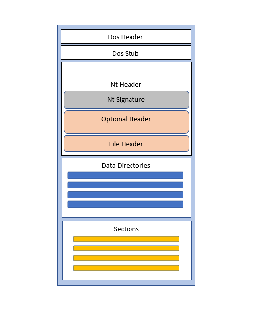

Introduction
Portable Executable (PE) is the file format for executables on Windows. A few examples of PE file extensions are .exe, .dll, .sys and .scr. This module discusses the PE structure which is important to know when building or reverse engineering malware.
Note that this module and future modules will often interchangeably refer to executables (e.g. EXEs, DLLs) as "Images".
PE Structure
The diagram below shows a simplified structure of a Portable Executable. Every header shown in the image is defined as a data structure that holds information about the PE file. Each data structure will be explained in detail in this module.

DOS Header (IMAGE_DOS_HEADER)
This first header of a PE file is always prefixed with two bytes, 0x4D and 0x5A, commonly referred to as MZ. These bytes represent the DOS header signature, which is used to confirm that the file being parsed or inspected is a valid PE file. The DOS header is a data structure, defined as follows:
typedef struct _IMAGE_DOS_HEADER { // DOS .EXE header
WORD e_magic; // Magic number
WORD e_cblp; // Bytes on last page of file
WORD e_cp; // Pages in file
WORD e_crlc; // Relocations
WORD e_cparhdr; // Size of header in paragraphs
WORD e_minalloc; // Minimum extra paragraphs needed
WORD e_maxalloc; // Maximum extra paragraphs needed
WORD e_ss; // Initial (relative) SS value
WORD e_sp; // Initial SP value
WORD e_csum; // Checksum
WORD e_ip; // Initial IP value
WORD e_cs; // Initial (relative) CS value
WORD e_lfarlc; // File address of relocation table
WORD e_ovno; // Overlay number
WORD e_res[4]; // Reserved words
WORD e_oemid; // OEM identifier (for e_oeminfo)
WORD e_oeminfo; // OEM information; e_oemid specific
WORD e_res2[10]; // Reserved words
LONG e_lfanew; // Offset to the NT header
} IMAGE_DOS_HEADER, *PIMAGE_DOS_HEADER;The most important members of the struct are e_magic and e_lfanew.
e_magic is 2 bytes with a fixed value of 0x5A4D or MZ.
e_lfanew is a 4-byte value that holds an offset to the start of the NT Header. Note that e_lfanew is always located at an offset of 0x3C.
DOS Stub
Before moving on to the NT header structure, there is the DOS stub which is an error message that prints "This program cannot be run in DOS mode" in case the program is loaded in DOS mode or "Disk Operating Mode". It is worth noting that the error message can be changed by the programmer at compile time. This is not a PE header, but it's good to be aware of it.
NT Header (IMAGE_NT_HEADERS)
The NT header is essential as it incorporates two other image headers: FileHeader and OptionalHeader, which include a large amount of information about the PE file. Similarly to the DOS header, the NT header contains a signature member that is used to verify it. Usually, the signature element is equal to the "PE" string, which is represented by the 0x50 and 0x45 bytes. But since the signature is of data type DWORD, the signature will be represented as 0x50450000, which is still "PE", except that it is padded with two null bytes. The NT header can be reached using the e_lfanew member inside of the DOS Header.
The NT header structure varies depending on the machine's architecture.
32-bit Version:
typedef struct _IMAGE_NT_HEADERS {
DWORD Signature;
IMAGE_FILE_HEADER FileHeader;
IMAGE_OPTIONAL_HEADER32 OptionalHeader;
} IMAGE_NT_HEADERS32, *PIMAGE_NT_HEADERS32;64-bit Version:
typedef struct _IMAGE_NT_HEADERS64 {
DWORD Signature;
IMAGE_FILE_HEADER FileHeader;
IMAGE_OPTIONAL_HEADER64 OptionalHeader;
} IMAGE_NT_HEADERS64, *PIMAGE_NT_HEADERS64;The only difference is the OptionalHeader data structure, IMAGE_OPTIONAL_HEADER32 and IMAGE_OPTIONAL_HEADER64.
File Header (IMAGE_FILE_HEADER)
Moving on to the next header, which can be accessed from the previous NT Header data structure
typedef struct _IMAGE_FILE_HEADER {
WORD Machine;
WORD NumberOfSections;
DWORD TimeDateStamp;
DWORD PointerToSymbolTable;
DWORD NumberOfSymbols;
WORD SizeOfOptionalHeader;
WORD Characteristics;
} IMAGE_FILE_HEADER, *PIMAGE_FILE_HEADER;The most important struct members are:
NumberOfSections - The number of sections in the PE file (discussed later).Characteristics - Flags that specify certain attributes about the executable file, such as whether it is a dynamic-link library (DLL) or a console application.SizeOfOptionalHeader - The size of the following optional headerAdditional information about the file header can be found on the official documentation page.
Optional Header (IMAGE_OPTIONAL_HEADER)
The optional header is important and although it's called "optional", it's essential for the execution of the PE file. It is referred to as optional because some file types do not have it.
The optional header has two versions, a version for 32-bit and 64-bit systems. Both versions have nearly identical members in their data structure with the main difference being the size of some members. ULONGLONG is used in the 64-bit version and DWORD in the 32-bit version. Additionally, the 32-bit version has some members which are not found in the 64-bit version.
32-bit Version:
typedef struct _IMAGE_OPTIONAL_HEADER {
WORD Magic;
BYTE MajorLinkerVersion;
BYTE MinorLinkerVersion;
DWORD SizeOfCode;
DWORD SizeOfInitializedData;
DWORD SizeOfUninitializedData;
DWORD AddressOfEntryPoint;
DWORD BaseOfCode;
DWORD BaseOfData;
DWORD ImageBase;
DWORD SectionAlignment;
DWORD FileAlignment;
WORD MajorOperatingSystemVersion;
WORD MinorOperatingSystemVersion;
WORD MajorImageVersion;
WORD MinorImageVersion;
WORD MajorSubsystemVersion;
WORD MinorSubsystemVersion;
DWORD Win32VersionValue;
DWORD SizeOfImage;
DWORD SizeOfHeaders;
DWORD CheckSum;
WORD Subsystem;
WORD DllCharacteristics;
DWORD SizeOfStackReserve;
DWORD SizeOfStackCommit;
DWORD SizeOfHeapReserve;
DWORD SizeOfHeapCommit;
DWORD LoaderFlags;
DWORD NumberOfRvaAndSizes;
IMAGE_DATA_DIRECTORY DataDirectory[IMAGE_NUMBEROF_DIRECTORY_ENTRIES];
} IMAGE_OPTIONAL_HEADER32, *PIMAGE_OPTIONAL_HEADER32;64-bit Version:
typedef struct _IMAGE_OPTIONAL_HEADER64 {
WORD Magic;
BYTE MajorLinkerVersion;
BYTE MinorLinkerVersion;
DWORD SizeOfCode;
DWORD SizeOfInitializedData;
DWORD SizeOfUninitializedData;
DWORD AddressOfEntryPoint;
DWORD BaseOfCode;
ULONGLONG ImageBase;
DWORD SectionAlignment;
DWORD FileAlignment;
WORD MajorOperatingSystemVersion;
WORD MinorOperatingSystemVersion;
WORD MajorImageVersion;
WORD MinorImageVersion;
WORD MajorSubsystemVersion;
WORD MinorSubsystemVersion;
DWORD Win32VersionValue;
DWORD SizeOfImage;
DWORD SizeOfHeaders;
DWORD CheckSum;
WORD Subsystem;
WORD DllCharacteristics;
ULONGLONG SizeOfStackReserve;
ULONGLONG SizeOfStackCommit;
ULONGLONG SizeOfHeapReserve;
ULONGLONG SizeOfHeapCommit;
DWORD LoaderFlags;
DWORD NumberOfRvaAndSizes;
IMAGE_DATA_DIRECTORY DataDirectory[IMAGE_NUMBEROF_DIRECTORY_ENTRIES];
} IMAGE_OPTIONAL_HEADER64, *PIMAGE_OPTIONAL_HEADER64;The optional header contains a ton of information that can be used. Below are some of the struct members that are commonly used:
Magic - Describes the state of the image file (32 or 64-bit image)MajorOperatingSystemVersion - The major version number of the required operating system (e.g. 11, 10)MinorOperatingSystemVersion - The minor version number of the required operating system (e.g. 1511, 1507, 1607)SizeOfCode - The size of the .text section (Discussed later)AddressOfEntryPoint - Offset to the entry point of the file (Typically the main function)BaseOfCode - Offset to the start of the .text sectionSizeOfImage - The size of the image file in bytesImageBase - It specifies the preferred address at which the application is to be loaded into memory when it is executed. However, due to Window's memory protection mechanisms like Address Space Layout Randomization (ASLR), it's rare to see an image mapped to its preferred address because the Windows PE Loader maps the file to a different address. This random allocation done by the Windows PE loader will cause issues in the implementation of future techniques because some addresses that are considered constant were changed. The Windows PE loader will then go through PE relocation to fix these addresses.DataDirectory - One of the most important members in the optional header. This is an array of IMAGE_DATA_DIRECTORY, which contains the directories in a PE file (discussed below).Data Directory
The Data Directory can be accessed from the optional's header last member. This is an array of data type IMAGE_DATA_DIRECTORY which has the following data structure:
typedef struct _IMAGE_DATA_DIRECTORY {
DWORD VirtualAddress;
DWORD Size;
} IMAGE_DATA_DIRECTORY, *PIMAGE_DATA_DIRECTORY;The Data Directory array is of size IMAGE_NUMBEROF_DIRECTORY_ENTRIES which is a constant value of 16. Each element in the array represents a specific data directory which includes some data about a PE section or a Data Table (the place where specific information about the PE is saved).
A specific data directory can be accessed using its index in the array.
#define IMAGE_DIRECTORY_ENTRY_EXPORT 0 // Export Directory
#define IMAGE_DIRECTORY_ENTRY_IMPORT 1 // Import Directory
#define IMAGE_DIRECTORY_ENTRY_RESOURCE 2 // Resource Directory
#define IMAGE_DIRECTORY_ENTRY_EXCEPTION 3 // Exception Directory
#define IMAGE_DIRECTORY_ENTRY_SECURITY 4 // Security Directory
#define IMAGE_DIRECTORY_ENTRY_BASERELOC 5 // Base Relocation Table
#define IMAGE_DIRECTORY_ENTRY_DEBUG 6 // Debug Directory
#define IMAGE_DIRECTORY_ENTRY_ARCHITECTURE 7 // Architecture Specific Data
#define IMAGE_DIRECTORY_ENTRY_GLOBALPTR 8 // RVA of GP
#define IMAGE_DIRECTORY_ENTRY_TLS 9 // TLS Directory
#define IMAGE_DIRECTORY_ENTRY_LOAD_CONFIG 10 // Load Configuration Directory
#define IMAGE_DIRECTORY_ENTRY_BOUND_IMPORT 11 // Bound Import Directory in headers
#define IMAGE_DIRECTORY_ENTRY_IAT 12 // Import Address Table
#define IMAGE_DIRECTORY_ENTRY_DELAY_IMPORT 13 // Delay Load Import Descriptors
#define IMAGE_DIRECTORY_ENTRY_COM_DESCRIPTOR 14 // COM Runtime descriptorThe two sections below will briefly mention two important data directories, the Export Directory and Import Address Table.
Export Directory
A PE's export directory is a data structure that contains information about functions and variables that are exported from the executable. It contains the addresses of the exported functions and variables, which can be used by other executable files to access the functions and data. The export directory is generally found in DLLs that export functions (e.g. kernel32.dll exporting CreateFileA).
Import Address Table
The import address table is a data structure in a PE that contains information about the addresses of functions imported from other executable files. The addresses are used to access the functions and data in the other executables (e.g. Application.exe importing CreateFileA from kernel32.dll).
PE Sections
PE sections contain the code and data used to create an executable program. Each PE section is given a unique name and typically contains executable code, data, or resource information. There is no constant number of PE sections because different compilers can add, remove or merge sections depending on the configuration. Some sections can also be added later on manually, therefore it is dynamic and the IMAGE_FILE_HEADER.NumberOfSections helps determine that number.
The following PE sections are the most important ones and exist in almost every PE.
.text - Contains the executable code which is the written code..data - Contains initialized data which are variables initialized in the code..rdata - Contains read-only data. These are constant variables prefixed with const..idata - Contains the import tables. These are tables of information related to the functions called using the code. This is used by the Windows PE Loader to determine which DLL files to load to the process, along with what functions are being used from each DLL..reloc - Contains information on how to fix up memory addresses so that the program can be loaded into memory without any errors..rsrc - Used to store resources such as icons and bitmapsEach PE section has an IMAGE_SECTION_HEADER data structure that contains valuable information about it. These structures are saved under the NT headers in a PE file and are stacked above each other where each structure represents a section.
Recall, the IMAGE_SECTION_HEADER structure is as follows:
typedef struct _IMAGE_SECTION_HEADER {
BYTE Name[IMAGE_SIZEOF_SHORT_NAME];
union {
DWORD PhysicalAddress;
DWORD VirtualSize;
} Misc;
DWORD VirtualAddress;
DWORD SizeOfRawData;
DWORD PointerToRawData;
DWORD PointerToRelocations;
DWORD PointerToLinenumbers;
WORD NumberOfRelocations;
WORD NumberOfLinenumbers;
DWORD Characteristics;
} IMAGE_SECTION_HEADER, *PIMAGE_SECTION_HEADER;looking at the elements, every single one is highly valuable and important:
Name - The name of the section. (e.g. .text, .data, .rdata).PhysicalAddress or VirtualSize - The size of the section when it is in memory.VirtualAddress - Offset of the start of the section in memory.Additional References
In case further clarification is required on certain sections, the following blog posts on 0xRick's Blog are highly recommended.
Conclusion
Understanding PE headers might be challenging the first time they are encountered. Luckily, none of the basic modules require an in-depth understanding of the PE structure. However, to make the malware perform more complex techniques, it will require a better understanding as some of the code requires parsing the PE file's headers and sections. This will likely be seen in intermediate and advanced modules.